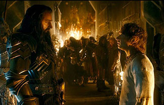

Thanks to my experience from my adventuring. I know now how to handle life-threatening situations. I also know how to defend myself and most importantly: I always try to go for the peaceful route. Like Gandalf said: "True courage is about knowing not when to take a life, but when to spare one."